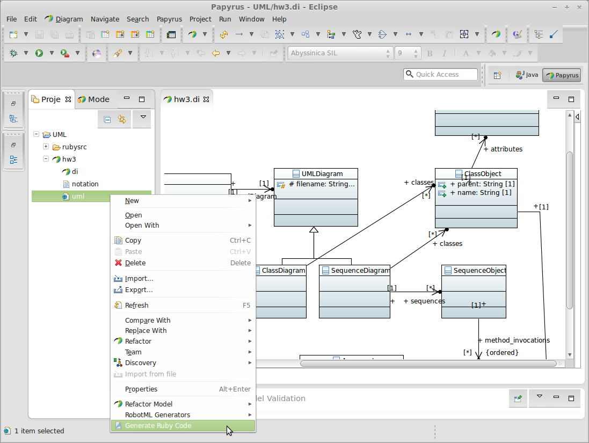

UML2Ruby Eclipse Plugin
The UML2Ruby Eclipse Plugin translates UML diagrams to Ruby skeleton code. It works with UML models created in Papyrus and other Eclipse Modeling Framework (EMF) compatible editors.
Features
Diagrams Supported:
- Class Diagrams
- Activity Diagrams
Shows up as an additional context menu for *.uml files in Eclipse and outputs files to "rubysrc" directory 
Installation
Eclipse Marketplace
The plugin can be installed from the Eclipse Marketplace by dragging the icon below into a running copy of Eclipse

Eclipse Update Site
The plugin can also be installed in Eclipse by clicking Help->Install New Software and entering http://lizzard.freeshell.net/UML2Ruby/ as the update site.
Source Code
The source code can be found on Github and is licensed under the Modified BSD license.
User Manual
Feature information including diagram and generated code examples can be found on our wiki